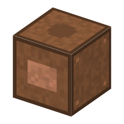

説明
①子ども 銅と亜鉛の板を、塩水をしみこませた布ではさんで積んだ、いちばん最初の電池。
②学生 銅6＋羊毛3で作る。上に亜鉛のインゴット、下に塩を入れると発電（はじめ 5 W、亜鉛と塩1つで2分）。使っているうちに出力が下がっていく（分極）。新しい亜鉛を入れるともとにもどる。ダニエル電池とくらべよう。
③大人 亜鉛が溶けて電子を出し（Zn → Zn2+ + 2e-）、銅の側で水素が出る（2H+ + 2e- → H2）。その水素の泡が銅の表面をおおうので、だんだん電気が流れにくくなる（分極）。
④ガチ 1800年イタリアのヴォルタが発表した。初めて電気が「流れ続けた」。同じ年にニコルソンとカーライルがこれで水を電気分解し、1820年エルステッドが電流で方位磁針がふれるのを見つけた。電圧の単位「ボルト」は彼の名前から。
作り方
使い道
（このアイテムを使うレシピは無い）